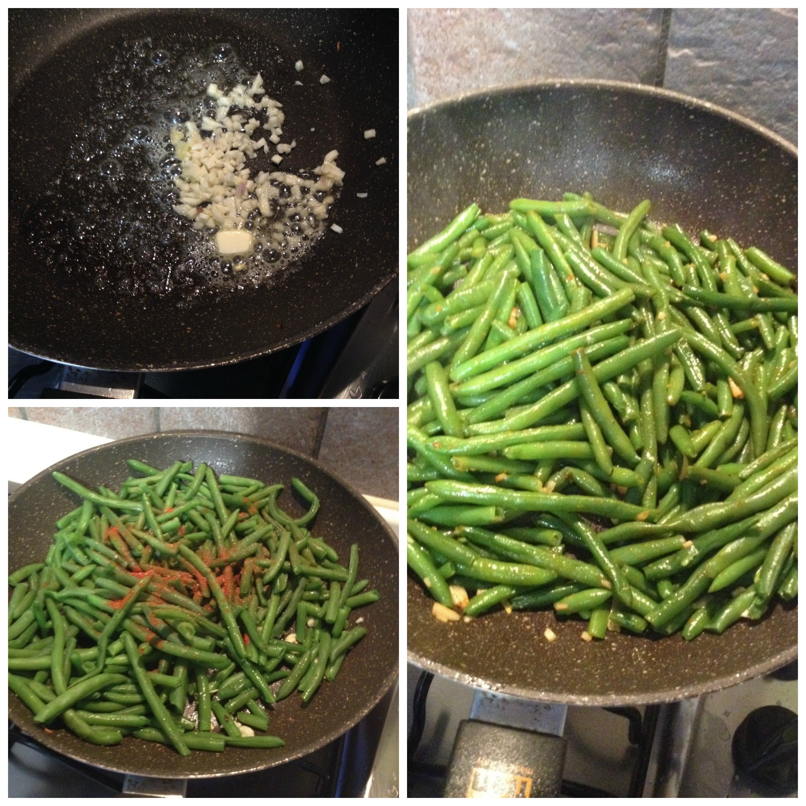

Green beans sauté¶

- Serves: 2
- Type: Side dish
Background¶
This is a very healthy side dish, full of vitamins and it is tasty.
Ingredients¶
- 3 garlic gloves
- 1 teaspoon paprika powder
- salt and pepper to taste
- 300 grams steam cooked greenbeans
- 1 tablespoon unsalted butter
Steps¶
- Heat a pan and melt the butter
- Add the garlic and stir, don’t brown the garlic
- Add the green beans, paprika, salt and pepper.
- Sauté for a few minutes.
- Serve
Can be served with¶
- Any meat
- Gravy
- Champignons sauce